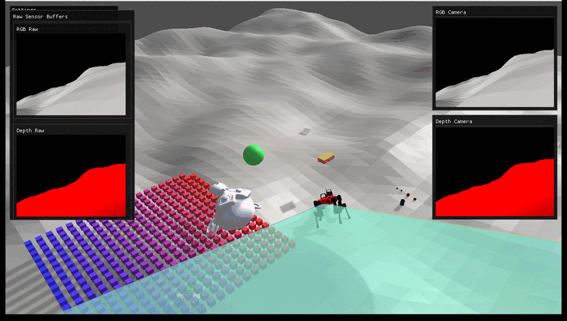
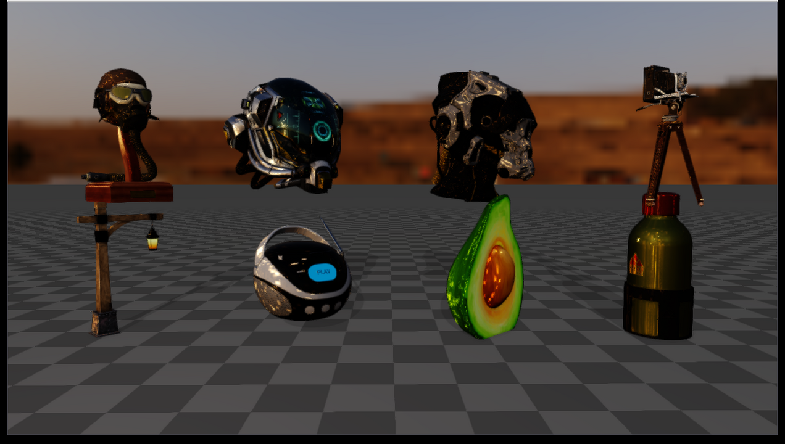
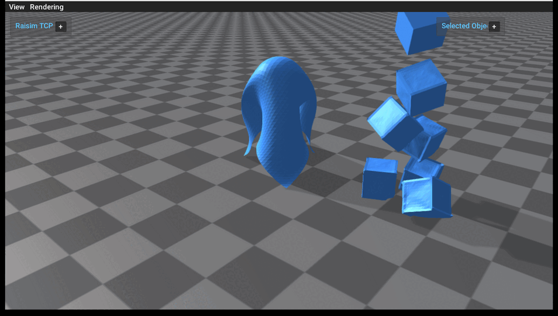
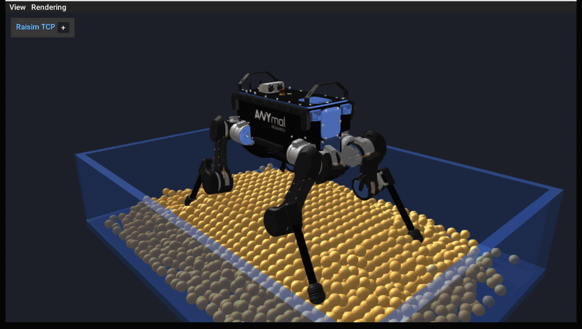

Changelog: v2.2.0
The latest changes are not just maintenance. They add three visible capabilities
that affect how users inspect, build, and demonstrate simulations: the rayrai
renderer, native deformable objects, and native granular media. The examples
below were run from build/examples and captured through the rayrai viewer for
this changelog.
Rayrai becomes the main visual workflow
{kind=link}

{kind=link}

rayrai is now the supported in-process visualization path. For users, this means examples can render directly inside the simulation process, expose RGB/depth sensor buffers, preview LiDAR and point clouds, and show richer scenes without starting a separate legacy visualizer stack.
This release adds and restores rayrai example documentation, source files, and assets. They also bundle PBR material examples so users can immediately inspect real textured models with renderer-side material support.
User impact:
Run modern visualization examples directly from
build/examples.Inspect RGB/depth camera output and raw sensor buffers through rayrai.
Use bundled PBR assets instead of assembling renderer demo resources by hand.
Deformable objects are now example-ready
{kind=link}

The deformable object example shows two workflows users can build on: an explicit cloth grid draping over a rigid obstacle and a stack of mesh-based deformable cubes. This makes the new deformable-body API concrete instead of leaving it as a header-level feature.
The example demonstrates particle counts, triangle topology, material tuning, mesh construction, and server streaming of dynamic deformable topology. Users can start from this scene when building cloth, soft shells, or deformable collision experiments.
User impact:
Create cloth from explicit vertices and triangles.
Build deformable objects from closed OBJ meshes.
Stream deformable topology and vertex updates through
RaisimServerand view them in rayrai.
Granular media gets a native robot example
{kind=link}

Granular media is now visible as a native RaiSim feature through an ANYmal example standing on a particle bed. The scene shows the part users care about: rigid and articulated bodies interacting with granular particles while the particles are rendered as instanced visuals in rayrai.
The example exposes practical controls for particle resolution, layers, radius, spacing, stiffness, damping, friction, rolling friction, and substeps. It also prints contact and stability statistics after headless runs, so users can tune material behavior and check whether a configuration stayed stable.
User impact:
Create granular beds with fixed and dynamic particles.
Couple granular particles to an articulated robot.
Visualize particle motion and tune material parameters from a runnable example.
Build, upgrade, and Python polish
This release also improves the less visible surfaces that affect daily use. Upgrade scripts were added for Linux and Windows, automatic upgrade support was wired into CMake, Windows build configuration was adjusted, and RaiSimPy symbol exposure was fixed.
User impact:
Easier package upgrades on Linux and Windows.
Fewer platform-specific CMake surprises.
Cleaner Python binding behavior for articulated systems and sensors.